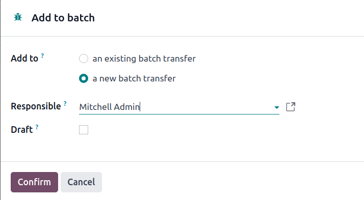
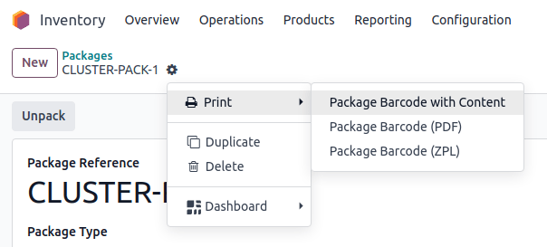

Preparación de varios pedidos¶
La preparación de varios pedidos es un enfoque avanzado para las recolecciones derivado de las recolecciones por lotes.
En esta estrategia, los recolectores llenan un carrito con varios paquetes, cada uno designado para una orden de ventas específica. Luego, se dirige a otra ubicación de almacenamiento y coloca los productos directamente en el paquete de la orden asociada.
Este método es el más eficiente para empresas medianas con volúmenes altos de órdenes y de productos relativamente únicos, puesto que el método elimina la necesidad de ordenar los productos en paquetes para los clientes después de la recolección.
Sin embargo, la preparación de varias órdenes tiene algunas desventajas. Por ejemplo, no se pueden priorizar las órdenes urgentes y los lotes optimizados se deben crear con anterioridad. Como resultado, el proceso de recolección puede ocasionar congestionamientos.
Example
La orden de ventas 1 pide una manzana y una naranja
La orden de ventas 2 pide una manzana y una banana
La orden de ventas pide una manzana, una naranja y una banana
Las manzanas se almacenan en el Estante A, las naranjas en el Estante B y las bananas en el Estante C.
Para recolectar los productos de las tres órdenes al mismo tiempo, el carrito lleva tres paquetes vacíos.
Empezando desde el Estante A, el recolector pone las manzanas en cada paquete. Luego, se dirige al Estante B y pone las naranjas en los paquetes asignados para las órdenes de venta 1 y 3. Finalmente, el recolector va al Estante C y pone en los paquetes de las órdenes 2 y 3 una banana en cada uno.
Con los paquetes de las tres órdenes llenos, el recolector lleva el carrito al lugar de salida, dónde se sellan y se preparan los paquetes para el envío.

Configuración¶
Para activar la preparación de varias órdenes al mismo tiempo, vaya a . En la sección Operaciones, active las opciones Paquetes y Transferencias por lotes.
Ya que la recolección por lotes se usa para optimizar las operaciones de recolección en Odoo, las opciones Ubicaciones de almacenamiento y Rutas multietapa en la sección Almacén, debe estar seleccionada en esta página de ajustes.
Las ubicaciones de almacenamiento le permite almacenar productos en ubicaciones específicas desde dónde se puedan recolectar, mientras que las rutas multietapa habilita la operación de recolección como tal.
Al terminar, haga clic en Guardar.

Configuración de los paquetes¶
Al habilitar la función de Paquetes, vaya a y haga clic en el botón Nuevo para crear un nuevo paquete.
En el formulario del paquete, la Referencia del paquete está completada con el siguiente número de PAQUETE en el sistema. La Fecha de empaquetado se configura de manera automática como la fecha de creación del formulario.
Seleccione Caja reutilizable en el campo Uso del paquete.
Ver también
Example
Un paquete destinado a una preparación de varios pedidos se llamará PAQUETE-VARIOS-PEDIDOS-3 para identificarlo fácilmente. Para este flujo de trabajo, los productos se empacan directamente usando las cajas para envío, por lo que el Uso del paquete está configurado como Caja desechable.

Creación de un lote de varios pedidos¶
Para ver cómo funciona la preparación de varios pedidos, vaya a la aplicación y cree una orden de ventas que se llenará dentro del mismo lote. Después de confirmar la orden, aparecerá el botón inteligente de Envío. Dentro del icono, habrá un número que representa la cantidad de pasos en el proceso de envío activo.
Example
Cree tres órdenes de venta para manzanas, naranjas y bananas como en el ejemplo anterior.
Después de confirmar la orden de venta, el botón inteligente de Envío mostrará el número 2, lo que indica que hay dos operaciones por completar: Recolección y Envío.
Con las órdenes de ventas ya creadas, ahora se deben agrupar en lotes. Para hacerlo, vaya al tablero de Inventario y selecciona el tipo de tarjeta de la operación, Órdenes de envío o Recolección (la que sea la primera operación en el flujo de envío).
Al hacerlo, aparecerá una lista filtrada de las operaciones salientes con el estado de Listo, lo que indica que todos los productos de la orden de ventas están en existencia.
Nota
La preparación de varios pedidos por lotes se puede crear para envíos salientes en uno, dos o tres pasos.
Haga clic en la casilla a la derecha de la operación de salida correspondiente para agregarla al lote. Ya con las recolecciones seleccionadas que desee, haga clic en el botón ⚙️ Acción (engranaje) y haga clic en la opción Agregar al lote que aparece en el menú desplegable.
Example
Para crear una recolección de varios pedidos por lotes, así como se muestra en el ejemplo anterior en un almacén configurado con envíos salientes en dos pasos, debe seleccionar las siguientes operaciones de recolección:
WH/PICK/00007: vinculada a la orden de ventas 88 de una manzana y una naranja.WH/PICK/00008: vinculado a la orden de ventas 89 de una manzana y una banana.WH/PICK/00009: vinculada a la orden de ventas 90 para una manzana, una naranja y una banana.
Al hacerlo, se abrirá una ventana emergente Añadir al lote, en la que se puede asignar el empleado responsable de la recolección.
Elija de las dos opciones disponibles en el campo Agregar a: agregar a un traslado por lotes existente o crear una nuevo traslado por lotes.
Para crear recolecciones por lotes en borrador para confirmarlas después, seleccione la casilla Borrador.
Termine el proceso al hacer clic en confirmar.
Procesar lotes¶
Para procesar los lotes, vaya a . Haga clic en un lote para seleccionarlo.
En la pestaña Operaciones detalladas, los productos que se van a recolectar están agrupados por ubicación.
En los campo Paquete de origen o en Paquete de destino, escriba el paquete que se usará para la recolección.
Nota
Use el campo Paquete de origen cuando el paquete de recolección esté configurado como reutilizable en el formulario del paquete. Esto significa que los productos se colocan de manera temporal en un contenedor durante la recolección, antes de transferirlos al paquete para el envío final.
También, puede usar el campo Paquete de destino cuando un producto está directamente en una caja desechable durante la recolección.
Example
Porcese la recolección de varios pedidos por lotes para el ejemplo de las tres órdenes de manzanas, naranjas y bananas asignando cada recolección a un paquete específico.
En la ubicación de almacenaje para las manzanas, WH/Existencias/Estante A, asigne las manzanas en las tres recolecciones a uno de los tres paquetes desechables, VARIOSPEDIDOS-PAQUTE-1, VARIOSPEDIDOS-PAQUETE-2, o VARIOSPEDIDOS-PAQUETE-3.
Registre esto en Odoo con el campo Paquete de destino en la pestaña Operaciones detalladas.

En Código de barras¶
Para procesar la preparación de varios pedidos directamente desde la aplicación Código de barras, seleccione el botón Traslados por lotes desde el tablero de Código de barras. Luego, seleccione el lote que desea.
En la pantalla para traslados por lotes, los productos en la recolección se agrupan por ubicación y cada línea tiene un color asignado para asociar los productos en la misma recolección.
Luego, siga las indicaciones para Escanear el código de barras de la ubicación de origen para la ubicación de almacenamiento del primer producto. Después, escanee el código de barras del producto y del paquete para procesar el traslado.
Repita esto para todos los productos y haga clic en Validar.
Nota
Para encontrar el código de barras del paquete, vaya a , seleccione el paquete que desea, haga clic en el icono ⚙️ (engranaje) en la parte superior del formulario del paquete y haga clic en la opción Imprimir.
Luego, seleccione una de las tres opciones de impresión en el campo Referencia del paquete para generar el código de barras del paquete.
Example
Comience procesando la preparación de varios pediod en la primer ubicación de almacenaje, Estante A y escanee la ubicación del código de barras. Al hacerlo, todas las recolecciones que necesitan productos de esta ubicación en particular se resaltarán.
Escanee el código de barras para la manzana, lo que resalta la recolección (que aparece en rojo) para el producto Manzana, para la recolección WH/PICK/00007.
Luego, escanee el código de barras del paquete VARIOSPEDIDOS-PAQUETE-1 y coloque el producto en el paquete designado.

Truco
Después de crear un traslado por lotes y asignar el paquete a una recolección, Odoo sugiere el paquete especificado y su nombre aparece en cursiva debajo del nombre del producto. Esto garantiza que los recolectores coloquen los productos en las cajas correctas.